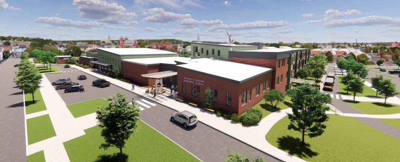
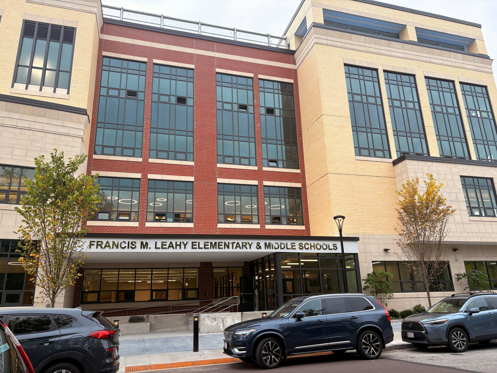
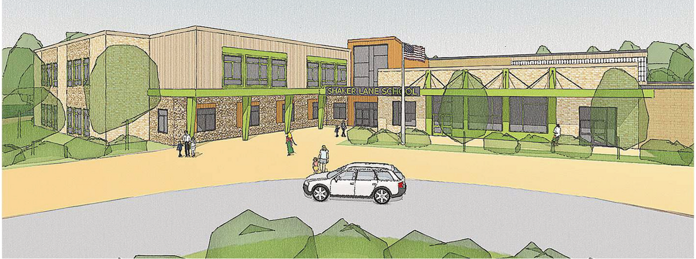
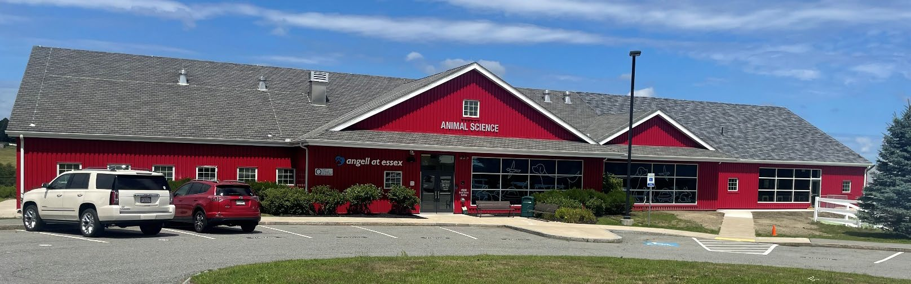

The project initially was to perform a Feasibility Study through Schematic Design Study for the John
B. DeValles Elementary School in the City’s south end. The school has been
serving the City’s south end district for more than 100 years with varying grade configurations over the years. Currently, it serves approximately 300 students In Grades K - 5. The Study was for increased enrollment of 400
students and included consideration of consolidating the DeValles School with another 100+ year old school, as a
renovated, or new, 760 student school. The Building Committee elected to pursue a 760-student school as the most cost
effective and educationally appropriate solution, following analysis of 16 different options.
The site is bordered by Buzzards Bay to the south and dense residential neighborhoods to the east, north, and south, and
the desire to maintain a neighborhood school, the challenge was to determine whether the consolidated school would be
successful as
1) an addition and renovation on the existing building and site,
2) by expanding the existing parcel by
purchasing adjacent properties, or
3) by locating the project on another parcel altogether. The Team worked with the City to
identify potential sites within the school(s) catchment area. Two sites were identified - 1 adjacent parcel allowed expanding
the site to over 4 acres and 1 separate site with an Activity and Use Limitation (AUL) with the DEP comprising
approximately 7 acres.
Ultimately, the Building Committee elected to pursue a new building on the new site, which was approved by the MSBA Board of Directors in September 2023. The
City purchased the site in November 2023 and approved funding for the project in February 2024 and an early site enabling
package involved preparing the site for the new school and removing the AUL. The building project is in bidding phase and expected be completed and occupied in November
2026. The project is targeting LEED Gold certification and features a 690kW photovoltaic array (340 rooftop and 350
canopy); all electric, zero fossil fuel design; and geo-thermal ground source heat pump heating and cooling system. The
project is pursuing credits through the Inflation Reduction Act (IRA) to offset the geothermal installation cost, and targeting
an Energy Use Intensity (EUI) below 25 to qualify for the local utility company highest incentives/credits. Total credits are
anticipated to be in the range of $7-8MM. The project is expected to realize a 56.6% energy cost savings before renewable
energy offsets, and with those offsets it is expected to be Net Zero.

Atlantic has recently completed the construction of the new $110m Leahy Elementary and Middle School which consolidated the former Leahy and Oliver Schools and serve 1000 students. The school was constructed on the site of the former Leahy, which is a 62,000 SF lot in an urban neighborhood. The building contains K-8 classrooms, team activity spaces, STE, art and music programming, administrative offices, a cafetorium with a stage for performances, a new state of the art media center and two rooftop play areas; one play area is for grades K-2 and is a courtyard style on the second floor and the other is rooftop and includes an adaptive PE space. The demolition of the existing building was completed in an early site package to expedite the schedule and allow the General Contractor to take ownership of a clean site. Due to the urban location, close coordination and communication with neighbors has been important and has been very successful. The school is scheduled to open for the 25-26 school year.

Atlantic Construction and Turner & Townsend Heery are currently providing OPM services for the construction of the new Shaker Lane Elementary in Littleton. The 97,000+/- SF school will serve 500+/- students. Existing school will be demolished for new fields, separate bus and car drop-offs, and additional parking spaces. The building contains Pre-Kthrough grade 2 classrooms, team activity spaces, art and music programming, administrative offices, a cafetorium with a stage for performances, a new state of the art media center, and separate play areas for Pre-K and K-2. MSBA Facilities Assessment Committee praised the project teams’ concept for the design and will be recommending to move to the schematic design phase at the MSBA’s February 2025 Board meeting The school is scheduled to open for the 2028- 2029 school year.

The $3.6 million project included a 2,500 SF addition to the existing Angell Veterinary Clinic at Essex Agricultural and Technical School. The two-story addition included a kennel room, dog grooming area and two classrooms, expanding the popular veterinary technician program at the growing regional school. The project included extensive site work as the addition was built into the side of a hill adjacent to the existing building and all work was completed during the school year and very close coordination was required between the General Contractor and the school facilities and teaching staff. Also included were new HVAC systems and connections to existing Building Management, Fire Alarm and Fire Protection.